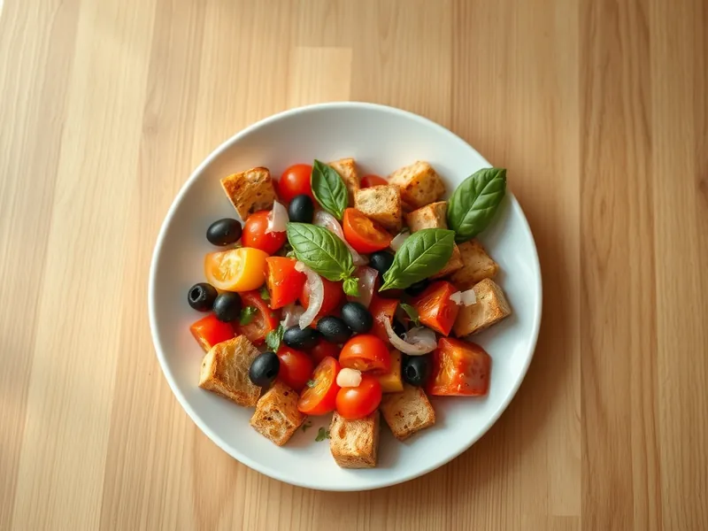

Фото: Иллюстрация ИИ, Cloudflare Workers AI
Панцанелла с помидорами
Итальянский салат из подсушенного хлеба, спелых помидоров, огурца и базилика
20 мин3 порц.370 ккал на порциюБ 8 · Ж 19 · У 41Итальянская кухня
Открыть в приложении: порции, таймеры, список покупок
Продукты на 3 порц.
- Чёрствый хлеб6 шт
- Помидоры4 шт
- Огурцы1 шт
- Лук репчатый0,5 шт
- Перец болгарский1 шт
- Базилик0,5 пучка
- Оливковое масло3,5 ст. л.
- Уксус 9%2 ч. л.
- Чеснок1 зуб.
- Соль0,5 ч. л.
- Оливки / маслины по желаниюпо вкусу
Как готовить
- Нарежьте хлеб кубиками 2 см и подсушите на сухой сковороде на среднем огне 5-6 минут, помешивая, до хрустящей корочки.
- Нарежьте помидоры крупными кусками, огурец полукружьями, перец полосками, лук тонкими перьями.
- Сложите помидоры в миску, посолите и оставьте на 5 минут, чтобы они пустили сок.
- Смешайте масло, уксус и давленый чеснок, полейте помидоры. Добавьте хлеб, огурец, перец, лук и оливки, перемешайте.
- Дайте постоять 5-10 минут, чтобы хлеб пропитался соком, порвите сверху базилик и подавайте.
Совет. Лучше всего подходит чёрствый хлеб с плотным мякишем вроде чиабатты. Мягкий свежий хлеб превратится в кашу.